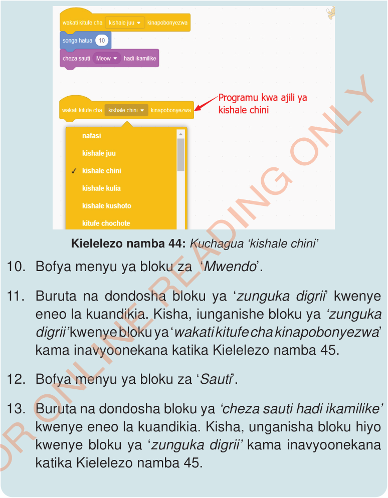

Kielelezo namba 44: Kuchagua ‘kishale chini’
10.
Bofya au tumia mishale menyu ya bloku za ‘Mwendo’.
11.
Buruta na dondosha bloku ya ‘zunguka digrii’ kwenye eneo la kuandikia. Kisha, iunganishe bloku ya ‘zunguka digrii’ kwenye bloku ya ‘wakati kitufe cha kinapobonyezwa’ kama inavyoonekana katika Kielelezo namba 45.
12.
Bofya au tumia mishale menyu ya bloku za ‘Sauti’.
13.
Buruta na dondosha bloku ya ‘cheza sauti hadi ikamilike’ kwenye eneo la kuandikia. Kisha, unganisha bloku hiyo kwenye bloku ya ‘zunguka digrii’ kama inavyoonekana katika Kielelezo namba 45.